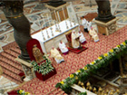
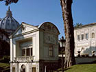
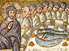
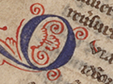
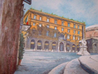

SANTO PADRE
COLLEGIO CARDINALIZIO
CURIA ROMANA
Cerca in Roman Curia
Cerca in Roman Curia
Cerca in Vatican.va
La Curia Romana
Segreteria di Stato
Dicastero per l'Evangelizzazione
Dicastero per la Dottrina della Fede
Dicastero per il Servizio della Carità
Dicastero per le Chiese Orientali
Dicastero per il Culto Divino e la Disciplina dei Sacramenti
Dicastero delle Cause dei Santi
Dicastero per i Vescovi
Dicastero per il Clero
Dicastero per gli Istituti di Vita Consacrata e le Società di Vita Apostolica
Dicastero per i Laici, la Famiglia e la Vita
Dicastero per la Promozione dell'Unità dei Cristiani
Dicastero per il Dialogo Interreligioso
Dicastero per la Cultura e l'Educazione
Dicastero per il Servizio dello Sviluppo Umano Integrale
Dicastero per i Testi Legislativi
Dicastero per la Comunicazione
Penitenzieria Apostolica
Supremo Tribunale della Segnatura Apostolica
Tribunale della Rota Romana
Consiglio per l'Economia
Segreteria per l'Economia
Amministrazione del Patrimonio della Sede Apostolica
Ufficio del Revisore Generale
Prefettura della Casa Pontificia

Ufficio delle Celebrazioni Liturgiche del Sommo Pontefice
Camerlengo di Santa Romana Chiesa
Pontificia Commissione per la Tutela dei Minori
Pontificia Commissione Biblica
Commissione Teologica Internazionale
Pontificia Commissione di Archeologia Sacra
Pontificia Accademia delle Scienze

Pontificia Accademia delle Scienze Sociali
Pontificia Accademia per la Vita
Pontificia Accademia di Belle Arti e Lettere dei Virtuosi al Pantheon
Pontificia Accademia Romana di Archeologia
Pontificia Accademia di Teologia

Pontificio Comitato per i Congressi Eucaristici Internazionali
Pontificio Comitato di Scienze Storiche
Guardia Svizzera Pontificia
AVEPRO
Autorità di Supervisione e Informazione Finanziaria (ASIF)
Ordine Equestre del Santo Sepolcro di Gerusalemme
Archivio Storico della Sezione per i Rapporti con gli Stati
Pontificia Accademia di S. Tommaso d'Aquino
Pontificia Accademia Mariana Internazionale
Pontificia Accademia «Cultorum Martyrum»

Pontificia Academia Latinitatis

Pontificia Accademia Ecclesiastica
Pontificia Commissione per l'America Latina
Fondazione «Centesimus Annus Pro Pontifice»
Ufficio del Lavoro della Sede Apostolica
Fondo Assistenza Sanitaria
Obolo di San Pietro
Rete Mondiale di Preghiera del Papa


.jpg)